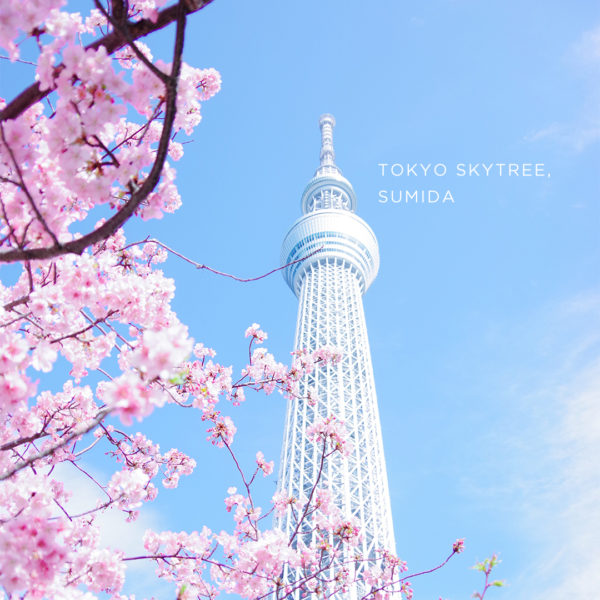
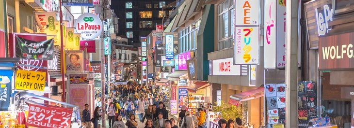

The City Of Technology
Travel in Tokyo
Tokyo
Tokyo is always beaming in colours, each spring when Sakura is in full bloom, visitors gather at the many parks and streets of Tokyo to enjoy the cities covered in pink. Another popular time to visit Japan is during the fall when the trees turned a fiery red. The city sees many visitors swooning over its beauty.Tokyo is the largest urban economy in the world by gross domestic product, and is categorized as an Alpha+ city by the Globalization and World Cities Research Network. Part of an industrial region that includes the cities of Yokohama, Kawasaki, and Chiba, Tokyo is Japan's leading center of business and finance. In 2019, it hosted 36 of the Fortune Global 500 companies.In 2020, it ranked fourth on the Global Financial Centres Index, behind New York City, London, and Shanghai. Tokyo has the world's tallest tower, Tokyo Skytree, and the world's largest underground floodwater diversion facility, MAOUDC. The Tokyo Metro Ginza Line is the oldest underground metro line in East Asia .
Tokyo Skytree with Tree Sakura
One of the places you can get a good glimpse of the sakura in full bloom is Ueno Park, it is a large park with two beautiful shrines. Another popular tourist attraction, Senso-ji is a must-visit for first-time visitors. The shrine was built in 628 and is the oldest and most important Buddhist temple in Tokyo. Senso-ji is also known as Asakusa Kannon Temple because it houses the Kannon or Guanyin, the Goddess of Mercy. This important center of worship draws 30 million visitors every year.Today Ueno Park is famous for the many museums found on its grounds, especially the Tokyo National Museum, the National Museum for Western Art, the Tokyo Metropolitan Art Museum and the National Science Museum. It is also home to Ueno Zoo, Japan's first zoological garden. Additionally, Ueno Park is one of Tokyo's most popular and lively cherry .
Pagoda of Senso-ji at Senso-ji temple

Japanese creative industry is also one of the most outstanding in the world, Japanese Anime and Manga are able to draw people all around the world to immerse in the Japanese culture, no matter where they come from or their background. Take for example during the pandemic, Demon Slayer (Kimetsu no Yaiba), a Japanese Anime had become a global sensation. The series’ exposure to the global market can be credited to Netflix, as people are choosing to stay indoors and on their screens in Japan and abroad, paving way for the franchise to earn at least 2.6 billion USD in 2020.The creativity of Japanese people transcends everything they do, they have a strong sense of perseverance and are known to be diligent and hard-working. It is not a surprise then that their values would allow them to succeed in the economic sense as well.
Scope the Fashion in Harajuku
Nothing is too outrageous when it comes to Tokyo's frenetic Harajuku District. The neighborhood refers to the area near the Harajuku Station, sandwiched between Shinjuku and Shibuya. If you're looking to bend the rules when it comes to everything cultural and fashionable, this is the spot to go. The main artery of Harajuku
(and the best place to spot the crazy teen fashions) is Takeshita Dori, which is flanked on either end by wild and wacky shops. Pink hair, tattoos, and knee-high boots are just the tip of the iceberg here. Even if your style is on the tamer side, fret not – Harajuku has plenty of more mainstream boutiques, as well. But Harajuku is also home to several historical attractions. Meiji Jingu is located here, as is the small Ota Memorial Museum of Art. Overall, it's the perfect neighborhood to encapsulate Japan's deep-rooted traditions with its surges of futuristic styles.